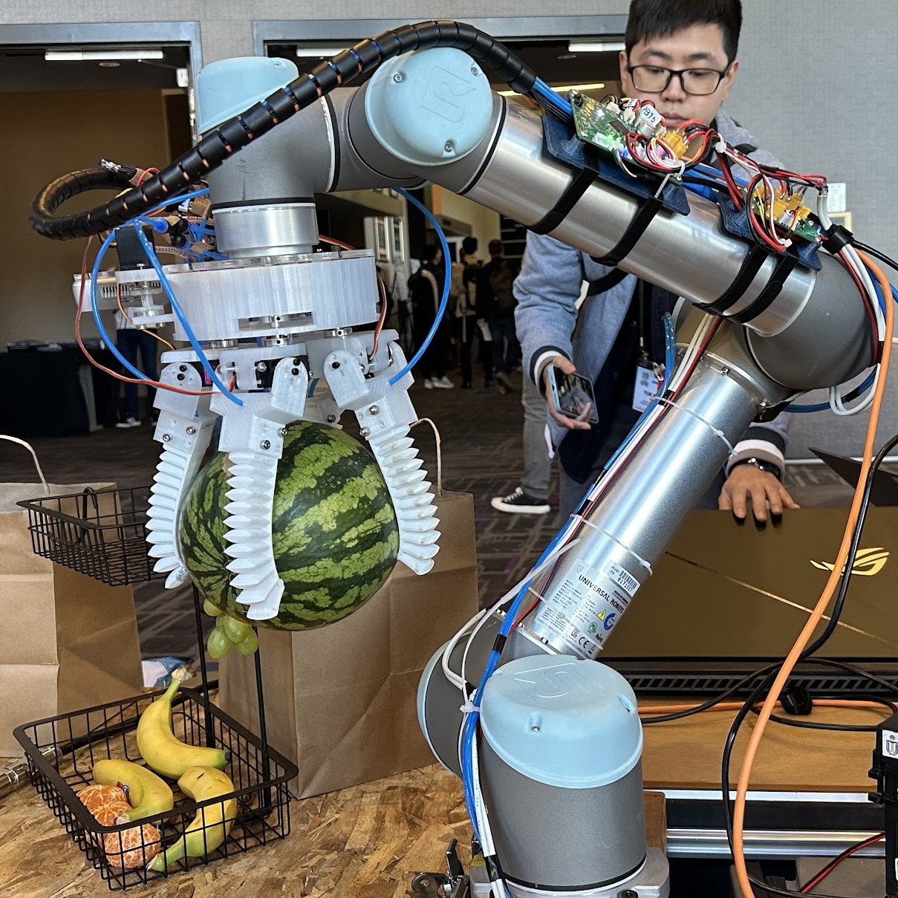
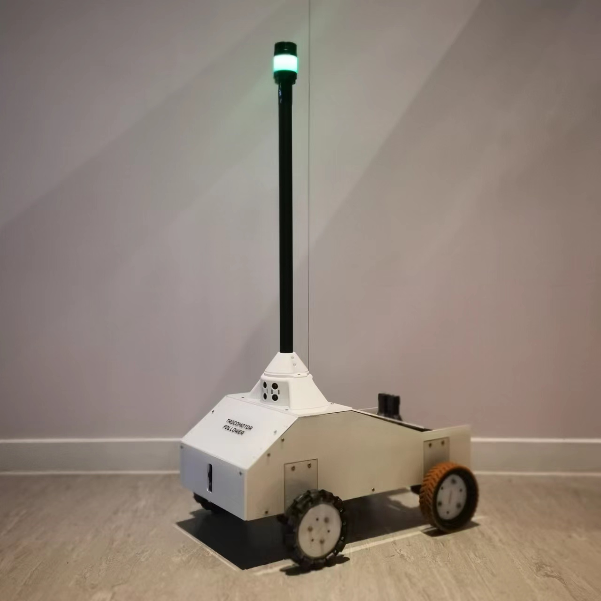
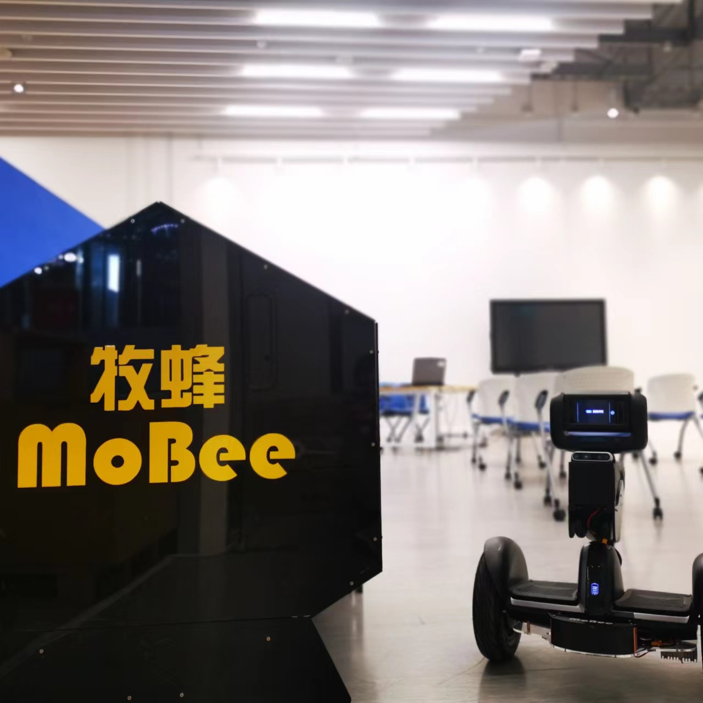
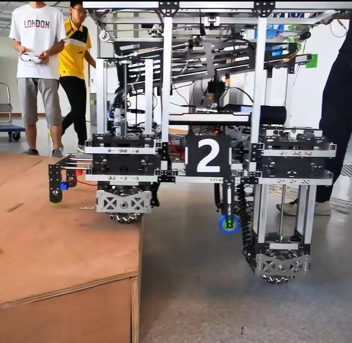

Projects
This page listed all my course and school projects during my study.
This include course projects, side projects, competitions, etc.
This include course projects, side projects, competitions, etc.

IEEE RoboSoft Competition 2024
I attended the IEEE RoboSoft Competition 2024 as the leader of the team. Our team built a soft gripper mounted on a UR5 robot arm that can grab and manipulate multiple kinds of fruits automatically. We won the autonomous prize in the competition.
Read more →
Less is More: Physical-enhanced Radar-Inertial Odometry
Radar offers the advantage of providing additional physical properties related to observed objects. In this study, we design a physical-enhanced radar-inertial odometry system that capitalizes on the Doppler velocities and radar cross-section information. The filter for static radar points, correspondence estimation...
Read more →
ELEC5660 : Introduction to Aerial Robotics
ELEC5660 is an HKUST postgraduate course held by the UAV Group. The course will give a comprehensive introduction to aerial robots.The goal of this course is to expose students to relevant mathematical foundations and algorithms and train them to develop
real-time software modules for ....
Read more →

IRLMS: Intelligent Real-time Land-movement Monitoring System
This is the 2021-2022 FYP project of ISD. The project found that the existing land-movement monitoring solution in the construction industry is frequently used yet inconvenient. So an Intelligent Real- Time Land-movement Monitoring System (IRLMS) including
two methods, Smart Inclinometer (SInc) method and......
Read more →

Trocomotor Follower: A Part of Auto-Trolley-Hauling System
This is the 2020-2021 Year 3 second semester project of ISD. This project worked with Hong Kong International Airport (HKIA). The project vision a fully autonomous trolley hauling system since during interviews and shadowing,
short of trolley hauling workers was observed. But due to short of time......
Read more →

Mobee: A Self-driving Sharing Personal Mobility System
This is the 2020-2021 Year 3 first semester project of ISD. This project has no industrial partner due to the pandemic. The topic is scoped by the professor which is Personal Mobility. After some interviews and observation
of current sharing transportation, the team thinks that the biggest problem of the......
Read more →
UROP: Gecko Inspired Robotics Gripper Development for Warehouse Automation
This UROP project is named as Robotics Gripper Development for Warehouse Automation. The naming involves Gripper and Automation which means the research focus on developing a gripper mechanism which can be applied to warehouse
environment mainly for automation purpose......
Read more →
Motipot: A Motivation Rehab Companion for Stroke Patient
This is the 2019-2020 Year 2 project of ISD. This project worked with several Hong Kong elderly centers and rehab centers. The topic is scoped by the professor which is Elderly Robotics. After some interviews shadowing and observation with several elders
and physical therapist, the team believes that the main obstacle lying in the way for elderly rehab is motivation. Therefore the team proposed a system......
Read more →

RoboMaster 2020
RoboMaster (机甲大师) is an annual intercollegiate robot competition held in Shenzhen, Guangdong, China, founded and hosted by the drone tech giant DJI. First started in 2015, it is the brainchild of DJI's founder and CEO Frank
Wang, and jointly sponsored by the Communist Youth League Central......
Read more →

RoboMaster 2019
RoboMaster (机甲大师) is an annual intercollegiate robot competition held in Shenzhen, Guangdong, China, founded and hosted by the drone tech giant DJI. First started in 2015, it is the brainchild of DJI's founder and CEO Frank
Wang, and jointly sponsored by the Communist Youth League Central......
Read more →

ISDN2300 & 2400: Digital Design & Physical Prototyping
I am actively producing this content, but currently not available. Sorry!
Read more →
ISDN 1000 & 1200 & 2200: Design Thinking & System Thinking series course
I am actively producing this content, but currently not available. Sorry!
Read more →
COMP2011: Programming with C++
I am actively producing this content, but currently not available. Sorry!
Read more →
2021 Xbot Park Smart Product Innovation Boot Camp
I am actively producing this content, but currently not available. Sorry!
Read more →
RoboMaster 2018 Winter Camp
I am actively producing this content, but currently not available. Sorry!
Read more →